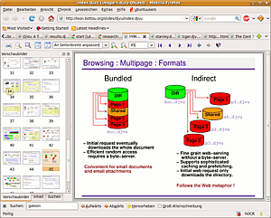

DjVu
 DjVu
DjVu  (ausgesprochen wie das französische "déjà vu") umfasst ein Verfahren zum Komprimieren von Bilddateien, ein Dateiformat und eine Software-Plattform, um Bilder/Dokumente, besonders im Internet, zu präsentieren und verschicken. Das Dateiformat ermöglicht im Vergleich zu anderen Formaten (pdf, tiff etc.) besonders kleine Dateigrößen bei gleicher, z.T. besserer, Bildqualität. Umgekehrt können mit dem Format sehr detailreiche Abbildungen in erträglichen Dateigrößen realisiert werden. Damit eignet sich DjVu sowohl zu Archivierungszwecken, als auch für Darstellungen im Internet, oder den Transfer umfangreicher Text/Bilddaten. DjVu wurde ursprünglich ab 1996 von AT&T entwickelt, 2000 an LizardTech verkauft, welches 2008 von Celartem aufgekauft worden ist. Derzeit (August 2016) werden kommerzielle Programme anscheinend nur noch von Cuminas angeboten.
(ausgesprochen wie das französische "déjà vu") umfasst ein Verfahren zum Komprimieren von Bilddateien, ein Dateiformat und eine Software-Plattform, um Bilder/Dokumente, besonders im Internet, zu präsentieren und verschicken. Das Dateiformat ermöglicht im Vergleich zu anderen Formaten (pdf, tiff etc.) besonders kleine Dateigrößen bei gleicher, z.T. besserer, Bildqualität. Umgekehrt können mit dem Format sehr detailreiche Abbildungen in erträglichen Dateigrößen realisiert werden. Damit eignet sich DjVu sowohl zu Archivierungszwecken, als auch für Darstellungen im Internet, oder den Transfer umfangreicher Text/Bilddaten. DjVu wurde ursprünglich ab 1996 von AT&T entwickelt, 2000 an LizardTech verkauft, welches 2008 von Celartem aufgekauft worden ist. Derzeit (August 2016) werden kommerzielle Programme anscheinend nur noch von Cuminas angeboten.
Große Teile des Codes sind unter GPL-Lizenz gestellt; die ursprünglichen Entwickler initiierten das Projekt DjVuLibre , eine Open-Source-Implementierung für DjVu. Das Format kann plattformübergreifend genutzt werden, Anwendungen für DjVu existiert für Windows, Mac, etc., es gibt beispielsweise auch eine iPhone/iPod touch-kompatible Readersoftware.
Hinweis:
Eine Übersicht über unter Ubuntu nutzbare Programme, mit den DjVu-Daten erstellt, bearbeitet, gelesen oder in das/aus dem Format konvertiert werden können, findet man unter DjVu/Programme. Der weitere Artikel hier beschreibt die Grundlagen/Funktionsweise des Formats.
Merkmale¶
Das DjVu-Format schneidet im Vergleich mit dem wesentlich bekannteren PDF-Format in etlichen Belangen wesentlich besser ab. Die Kriterien "Plattformunabhängigkeit" und "Wahrung der Datenintegrität" gelten für beide Formate; DjVu-Dateien sind dazu bei gleicher Bildqualität wesentlich kleiner, ein Vorteil bei größeren Dokumenten (Vergleich von Auflösungen und Größen auf cuminas.jp ). Die Suche und der Zugriff auf beliebige Seiten verläuft, gerade bei größeren Dokumenten, bei DjVu-Daten signifikant schneller. Außerdem baut sich ein DjVu-Dokument, das über eine Netzwerkverbindung aufgerufen wird, deutlich rascher auf, nach wenigen Momenten ist eine meist schon aussagekräftige Ansicht der Schwarz-Weiß-Ebene vorhanden, die dann mit den weiteren Daten aufgefüllt wird. Außerdem wird deutlich weniger Speicherleistung benötigt, um die Ansicht aufzubereiten.
Dabei ist DjVu eher ein "Exportformat", eine "direkte" Erstellung ist nicht möglich. Die Bilddaten müssen zunächst als Rastergrafik vorliegen, sie werden dann mit sehr ausgereiften Analyse-Techniken aufgearbeitet, und mit jeweils unterschiedliche Methoden komprimiert.
Aufbau des Formats¶
Anders als bei anderen Kompressionsverfahren werden für DjVu-Dateien (.djv,.djvu) die Vorlage in verschiedene Ebenen mit jeweils relativ einheitlichen Inhalten zerlegt ("mixed raster content imaging model" MRC); es sind im Prinzip Bilder mit mehreren Lagen, bei denen jeweils unterschiedliche Kompressionstechniken zum Einsatz kommen. Eine farbige Vorlage mit Text-, Grafik- und Hintergrund-Bestandteilen wird dabei in zwei, ggf. drei Ebene aufgeteilt: der "Vordergrund", der typischerweise den Text und ggf. "Strichzeichnungen" enthält ("foreground mask"); wenn nötig wird davon eine weiter Lage abstrahiert, wenn es sich um farbigen Text/Grafikelemente handelt, in der die Farben dieser Elemente extra abgebildet werden. Die Hintergrundebene enthält Bilder, Hintergrundfarben, Struktur des Papiers etc. Dieses Verfahren wird auch als "DjVuLayered/DjVuDocument"" bezeichnet.

Vordergrund¶
Reine Binärgrafiken (z.B. Textdateien) oder die extrahierte "foreground mask" werden mit dem sog. CJB2-Algorithmus (auch "DjVuBitonal" genannt) komprimiert, dabei sind sehr hohe Kompressionsraten ohne nennenswerten Qualitätsverlust möglich. Für den Musterabgleich auf der bitonalen Ebene wird ein Index erstellt, dazu wird in einer sog. "Shape-Directory"-Datei eine Auflistung aller vorkommenden Muster (also Buchstaben) generalisiert und das Auftreten jedes Musters für alle Seiten des Dokumentes in einem Index festgehalten. Gerade für größere Dokumente lässt sich so noch bessere Kompressionsraten erzielen, da die Größe der "Shape-Directory" sich gegenüber dem kleinerer Dokumente kaum verändert.
Hintergrund¶
Für die Hintergrund und/oder reine Bilddaten wird der verlustbehaftete c44-Algorithmus (auch "DjVuPhoto" oder "IW44" genannt) verwendet, in der Qualität vergleichbar mit jpeg2000), die relativ hohe Kompressionsraten ohne störende Qualitätsverluste ermöglicht. Zudem werden alle Bereiche, für die im Bild Daten der anderen Ebenen vorhanden sind, aus der Hintergrundebene herausgerechnet und so "platzsparend" wie möglich dargestellt, so kann die Größe weiter reduziert werden.
Dieselbe Kompressionstechnik wird auch für eine eventuell vorhandene "Farblage" des Vordergrundes verwendet; das Verfahren ermöglicht es u.a., auch farbige oder "invertierte" Texte mit guten Ergebnissen einer Texterkennung zu unterziehen, was mit herkömmlichen OCR-Methoden nur schwer realisierbar ist.
Weitere Inhalte¶
Außerdem kann der Text (mittels Texterkennungsverfahren erkannt, oder in den Vorlagen - z.B. von Textverarbeitungsprogrammen erstellte PDF-Dateien - vorhanden) als weitere Lage ("Hidden Layer") integriert und so indexiert werden (es entstehen durchsuchbare Dokumente). Die Suche kann dann in Verbindung mit der erstellten Index-Datei erfolgen, was einen extrem schneller Zugriff auf alle Vorkommen eines bestimmten Musters (also z.B. einer Buchstabenfolge) ermöglicht. Der Text lässt sich im Dokument markieren und kopieren, ggf. auch bearbeiten.
Weiter kann ein DjVu-Dokument ein sogenanntes "annotation chunk" beinhalten, eine Sektion, in der Anmerkungen und Hyperlinks auf andere Textseiten oder beliebige Webseiten gespeichert werden können. In dieser Sektion lassen sich auch Anweisungen zum Darstellungsmodus beim Öffnen einer Seite, Hervorhebungen bestimmter Bereiche, oder beliebige Metadaten zu dem Dokument aufnehmen. Vorgefertigte Vorschaubilder ("Thumbnails") können ebenfalls mit gespeichert werden. Darüber hinaus besteht die Möglichkeit, in einem "navigation chunk" eine "Outline", also ein hierarchisch gegliedertes Inhaltsverzeichnis mit Verweisen auf die jeweiligen Seiten des Dokumentes, aufzunehmen.
chunks und slices¶
DjVu-Daten sind so aufgebaut, dass ein sehr schneller Bildaufbau erfolgt. Eine erste Ansicht ist schon möglich, während die Verfeinerungen noch nachgeladen, und dann der Darstellung zugefügt werden. Dieses Verfahren arbeitet mit Datenblöcken ("chunks"), in die die DjVu-Datei aufgeteilt wird. Jeder Datenblock besteht aus sog. "slices" (Zeilen oder Schichten), eine normale DjVu-Datei besteht meist aus insgesamt 80 bis 120 slices, die in bis zu vier (Standard) chunks aufgeteilt sind. Je mehr slices verwendet werden, desto höher ist die Bildqualität, aber desto größer ist auch die resultierende Dateigröße. Der erste chunk (meist die bitonale Ebene) besteht in der Regel aus ca. 70 slices, die weiteren chunks entsprechend kleiner. Den blockweisen Aufbau der Datei kann man im Viewer z.B. beim Seitenwechsel beobachten (Details dazu in c44 ).
bundled documents¶
 DjVu-Dateien werden entweder als sog. "bundled" oder als "indirect" Dokumente erstellt. "bundled" bedeutet, dass das gesamte mehrseitige Dokument (inklusive "Shape Directory" und "shared"-Datei) in einer Datei gespeichert wird. Vorteil dieser Methode ist die einfach Handhabung (Kopieren, Umbenennen, Verschicken etc.), und wird für (kleinere) Dokumente empfohlen, die auf einer lokalen Festplatte vorliegen oder über sehr schnelle Netzwerkverbindungen zugegriffen werden kann.
indirect documents¶
Mit "indirect" werden Dokumente bezeichnet, für die für jede Seite eine einzelne Datei (üblicherweise in einem gemeinsamen Ordner) vorliegt. Auf diese wird mittels einer Index-Datei zugegriffen, über die gezielt einzelne Teile des Dokumentes angesteuert werden können. Das hat gerade für netzbasierte (und auch sehr umfangreiche Dokumente) den Vorteil, dass nicht erst das gesamte Dokument sequentiell heruntergeladen (und ggf. zwischengespeichert) werden muss, sondern auf jede Seiten in jeder beliebigen Reihenfolge unmittelbar zugegriffen werden kann.
Für den Benutzer sind diese Unterschiede allerdings kaum bemerkbar (eventuell schnellerer Zugriff auf "zufällige" Seiten), das DjView-Betrachter-Programm (und damit das Browser-Plugins) ermöglicht es, für beide Varianten das gesamte Dokument in einem Arbeitsgang auszudrucken, zu sichern oder zu durchsuchen. Die Speicheroption erlaubt auch eine Konvertierung von einem in das andere Format.
Ein interessanter Größenvergleich  zeigt das Potential des Formats. Scan Tailor erstellt im Prinzip vergleichbare .tiff-Dateien, in denen der Hintergrund sowie die Bilder vom Text getrennt werden; die Dateien sind um etliche Male größer als vergleichbare DjVu-Dateien.
zeigt das Potential des Formats. Scan Tailor erstellt im Prinzip vergleichbare .tiff-Dateien, in denen der Hintergrund sowie die Bilder vom Text getrennt werden; die Dateien sind um etliche Male größer als vergleichbare DjVu-Dateien.
Grenzen der Open-Source-Implementierung¶
Dreh- und Angelpunkt für die Erstellung von mehrfarbigen DjVu-Dateien ("DjVuDocument") ist die Zerlegung ("Segmentation") der Bilddaten, insbesondere die Extrahierung der Daten für die bitonale (Text-)Ebene. Die Open-Source-Implementierung kommt hier an ihre Grenzen. Das Verfahren zur automatische Unterscheidung dessen, was "Vordergrund" und was "Hintergrund" eines "Grafik-Dokumentes" (bunte Zeitschriftenseite , Katalogseite etc.) ist, wurde bisher nicht freigegeben; somit ist ein verlässliches vollautomatisiertes Extrahieren dieser Daten mit Open-Source-Werkzeugen derzeit kaum möglich. Die Entwickler weisen in der DjVu-Manpage darauf hin und empfehlen kommerzielle Produkte (die es aber für Linux wohl nicht gibt...) oder das Verwenden des any2djvu-Angebotes . Allerdings ist auch das dort verwendete Verfahren dazu nicht uneingeschränkt in der Lage.
Inzwischen existiert mit didjvu eine leistungsstarke, hochkonfigurierbare Open-Source-Alternative zur Zerlegung der Dateien. Das Programm wird noch weiterentwickelt, liefert aber bereits beeindruckende Ergebnisse (siehe xsane2djvu), Details in didjvu. Ansonsten wäre das "komplette" Erstellen farbiger DjVu-Dateien zwar möglich, beinhaltet aber einigen Aufwand, ggf. auch Handarbeit zur Extraktion der "foreground mask".
Schwarz-Weiße Dokumente können fast ohne Einschränkungen erstellt werden (da das Extrahieren weitgehend entfällt, problematisch bleiben aber Text/Bildüberlagerungen). Das Konvertieren "kommerziell/elektronisch" erstellter farbiger PDF-Dateien stellt dagegen für Open-Source-Programme, auch mit allen Lagen, kein Problem dar.
Links¶
DjVuLibre-Projektseite
auf sourceforge.netdjvuzone.org
 ehemals sehr umfangreiche DjVu-Seite, momentan leider nur noch eine kurze Einführung in die DjVu-Technologie auf französisch.
ehemals sehr umfangreiche DjVu-Seite, momentan leider nur noch eine kurze Einführung in die DjVu-Technologie auf französisch.Produktbeschreibung
(im DjVu-Format) auf djvu.orgPlanetDjVu
DjVu-Forum auf djvu.org - seit Dezember 2014 leider für neue Beiträge geschlossenBlog
mit DjVu-InhaltenEntwickler-Webseite
von Yann LeCun, einem der Hauptentwickler von DjVuEntwickler-Webseite
von Leon Bottou, einem weiteren Hauptentwicklercuminas
- kommerzielle DjVu-AnwendungenOnline-Konvertierungs-Service
, über den kostenlos auch DjVu-Dateien erstellt werden könnenDjVu-Howto
mit Skripten zum Erstellen von DjVu-Dateien
- Erstellt mit Inyoka
-
 2004 – 2017 ubuntuusers.de • Einige Rechte vorbehalten
2004 – 2017 ubuntuusers.de • Einige Rechte vorbehalten
Lizenz • Kontakt • Datenschutz • Impressum • Serverstatus -
Serverhousing gespendet von